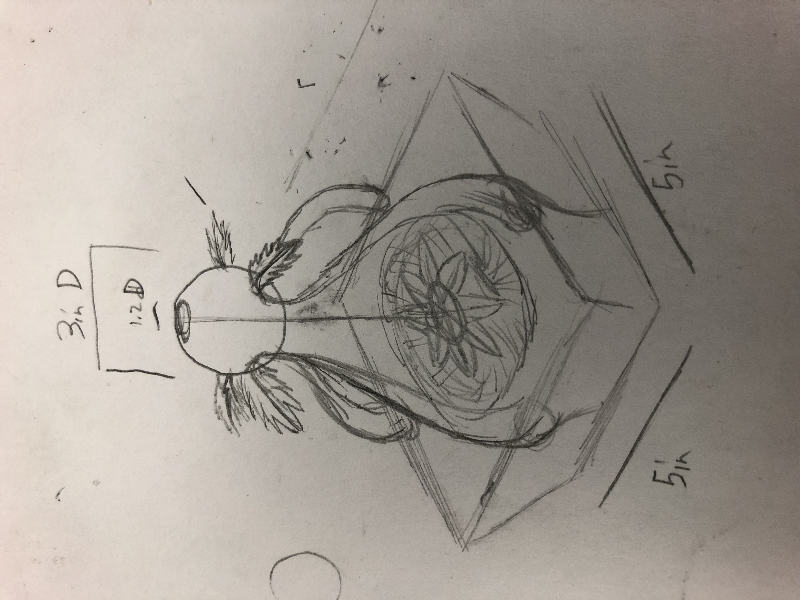

Phase 1

Thingiverse Sundial
For this week, we had to pick something from Thingaverse and then had to print it out to test out how to use a 3D printer
For this week, we had to pick something from Thingaverse and then had to print it out to test out how to use a 3D printer
In this example, we were given a chose to pick a hypothectical senerior in which we can create a world with our own rules tied to it.
Artifact 1: Contraption that can predict how much rainfall.
In a world where people naturally photosynthesize, there would be an increase in water demand in which case main people will have to come up with new ideas on how to obtain more water. Now because the tools needed to collect water isn't new. But how about a type of machine, almost like a personal robotic meteorologist that can tell them how long until the next rain storm, at which point, people can do whatever they want to collect water.
Artifact 2: Device the can tell levels of CO2 to OS in an area
Since people will naturally photosynthesize, location would be ideal since people will now be looking for areas that have high concentrations of CO2 to convert to O2. So people would need some kind of device that would measure the levels of CO2 to O2 in an area. Working like a geiger counter, it would take in the air in the encompassing surroundings and would give out a reading as to how much COs would be in the atmosphere.
The Last idea was done much later but it does show some sort of stone carving which does seem to show some sort of pictographic story of a type of sun god.
For the people of this world, the sun means life and survival for them. This is because many of these people have a special property about them. Which is that they have special photosynthesising skin cells in their body that allows them to make their own energy by sitting in the sun. And since they rely heavily on the sun for them to make their own energy. Many of these individuals have developed their own religion surrounding the sun as their god. While it is still unclear about all of their traditions and their belief system. There has been new information being gathered to help us understand how these people lived. One discovery was this artifact that was believed to be a type of sacred relic that was used for prayer. How it works is that this relic would have stood in an area open to the sky and exposed to the sun. Once the sun shines over the relic, the light that comes through the opening in the sphere above and spotlights the small altarpiece in the middle, it is then that the people would go out in the open and pray. This tradition serves both as a time for people to pray to the sun god while at the same time, acquire as much of the sun’s rays as possible so that they can make energy.
The process of making the model in Fusion 360.
Printing layout in Cura, model had to be cut in half so that it would print more easily
Both pieces had been printed byt parts of the leaves had been brittle and broke easliy. They were later glued together.